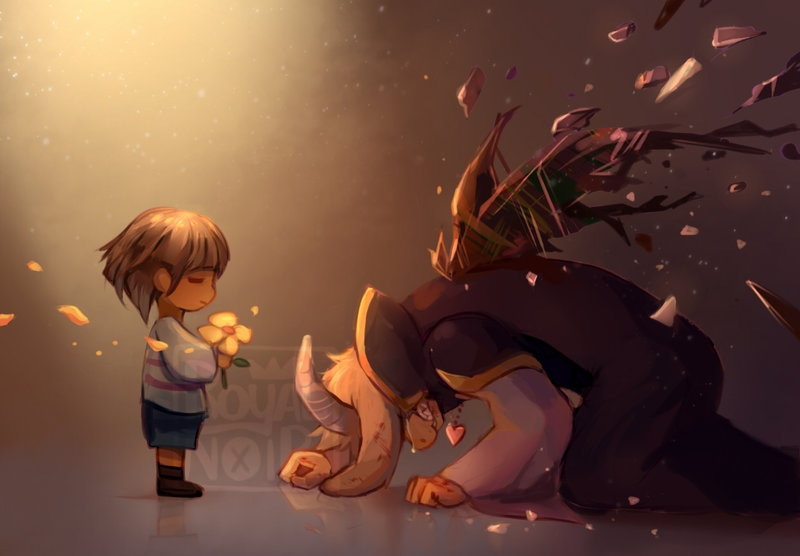
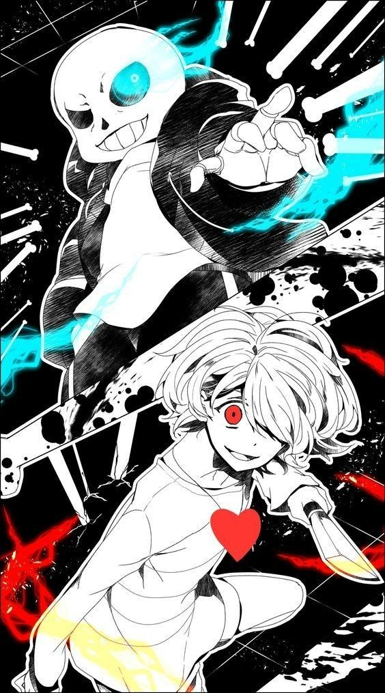

Ruta Neutral
En el que parecia un ultimo enfrentamiento contra Asgore, Frisk tiene la opción de perdonarlo o matarlo para salir del subsuelo. Pero, sin importar la elección, Flowey mata a Asgore y con el poder de las almas humanas se transforma en un temible Dios. Frisk debe enfrentarse a él para liberar a las almas humanas y derrotarlo para poder salir del subsuelo. Al final, Frisk logra salir del subsuelo, pero deja atrás a los monstruos que siguen atrapados bajo la barrera. Dependiendo del de las acciones tomadas durante el juego, hay varias variaciones de este final.
Ruta Pacifista
Tras un largo viaje por todo el underground, Frisk logra hacerse amigo de todos los monstruos y antes de la pelea contra Asgore, todos los mounstruos aparecen para ayudar a Frisk haciendo que Asgore se rinda, sin embargo, todo esto era un plan de Flowey para obtener todas las almas humanas y de los mounstruos convirtiendose en un Dios. Entonces, tras una dura batalla, Frisk decide salvar una ultima vez a todos los mounstruos y tambiñen a Asriel.

Asriel vuelve a su forma original y se da cuenta todo lo que hizo rompiendo a llorar, entonces Frisk decide abrazarlo para consolarlo. Asriel sabe que no tiene mucho tiempo antes de desaparecer, por lo que usando el poder de las almas humanas, rompe la barrera liberando a todos los monstruos. Por fin tras años de desesperacion, los monstruos pueden volver a la superficie y vivir en paz con los humanos.
Ruta Genocida
Frisk decide eliminar a todos los mounstruos del subsuelo, enfrentandose a cada uno de ellos y matandolos sin piedad. Finalmente, Frisk llega a la batalla final contra Sans, el unico que se interpone en su camino. Tras una dura batalla, Frisk logra vencerlo y Sans ve por ultima vez a su hermano Papyrus antes de desaparecer.

Tras eliminar a Asgore y Flowey, Chara aparece y hace un trato con Frisk, ofreciendole la oportunidad de destruir el mundo y comenzar de nuevo. Frisk acepta y todo el mundo es borrado. ꍟꌗ꓄ꍏꋪꍏꌗ ꉓꂦꈤ꓄ꍟꈤ꓄ꂦ ꍏꌗꍟꌗꀤꈤꂦ.
Ruta dificil

Frisk revela todos los secretos ocultos del underground, la verdad de ese ser oscuro se revela, pero no esta en la misma liga que los anteriores jefes finales, es un ser más alla de la compresión humana. Gaster se manifesto y reta a Frisk a un duelo final, donde solo uno puede sobrevivir. Tras una batalla épica, Frisk logra vencer a Gaster, pero a un gran costo, el mundo comienza a desmoronarse y Frisk se encuentra atrapado en un limbo entre la realidad y la nada. Ruta dificil